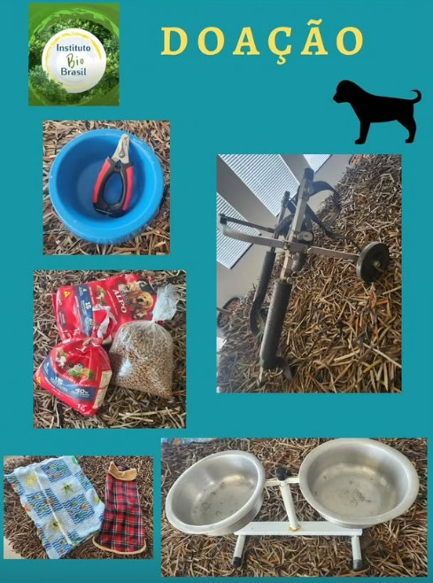
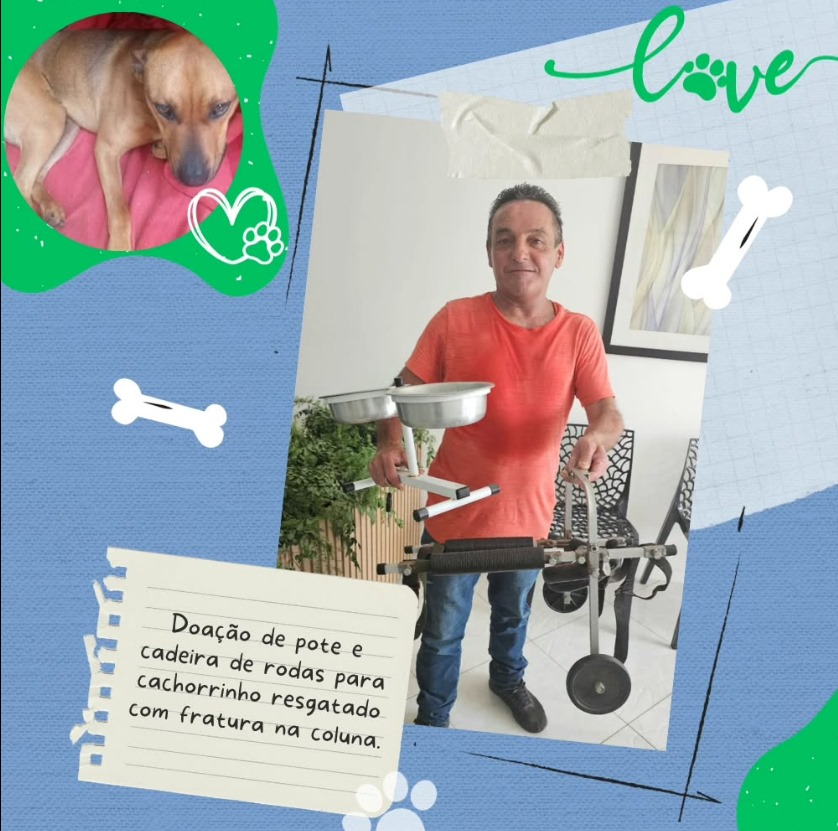
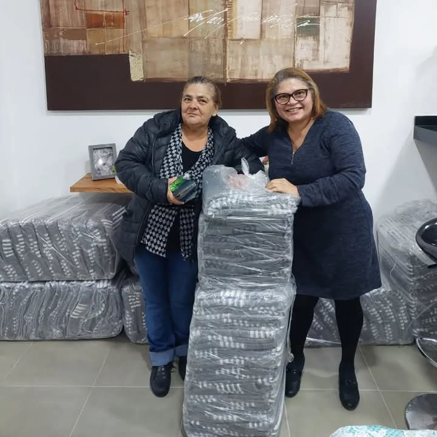

Para realizar as doações é muito simples. Basta ir até o local da clínica, preencher o formulário de doação e deixar com o funcionário responsável.
As doações que recebemos são: Ração, tampinhas de garrafas, lacres de lata de refrigerante, cobertores, roupas para animais, roupa cirúrgica, cadeira de rodas, botinhas, medicamentos (com receita).
O que fazemos com as doações?
Todo o dinheiro arrecadado com tampinhas e lacres é convertido em benefício aos animais. Doamos ração, apoiamos protetores e promovemos campanhas. Atualmente temos 10% de visibilidade, mas queremos ampliar essa rede de solidariedade!
Seja parte dessa causa! 💚



TRANSFORME SUA COMPAIXÃO EM AÇÃO! 🐾
UM GESTO SEU PODE MUDAR O DESTINO DE UM ANIMAL EM SOFRIMENTO.
DOE AMOR EM FORMA DE RAÇÃO, COBERTORES, MEDICAMENTOS OU O QUE PUDER.
CADA CONTRIBUIÇÃO É UM PASSO RUMO A UMA VIDA MAIS DIGNA PARA ELES.